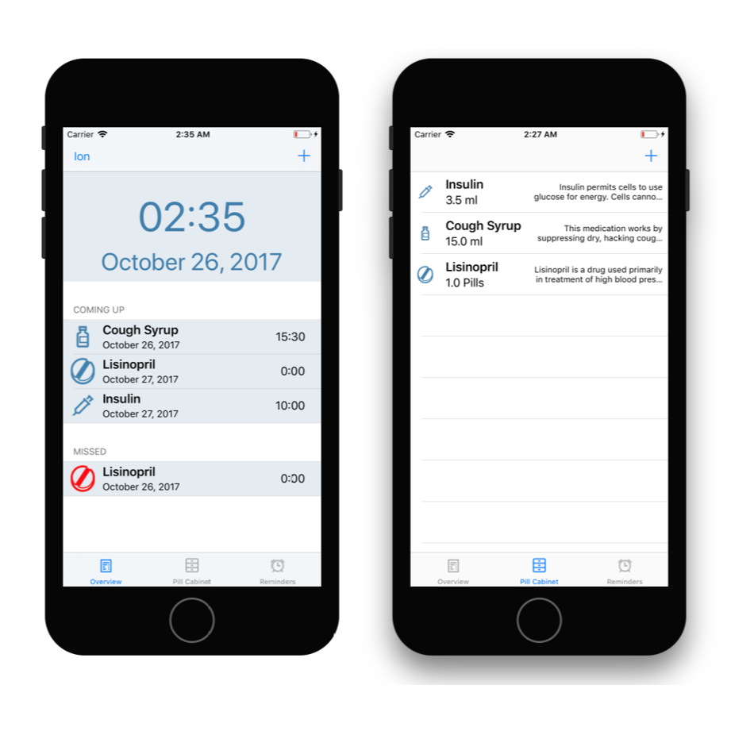
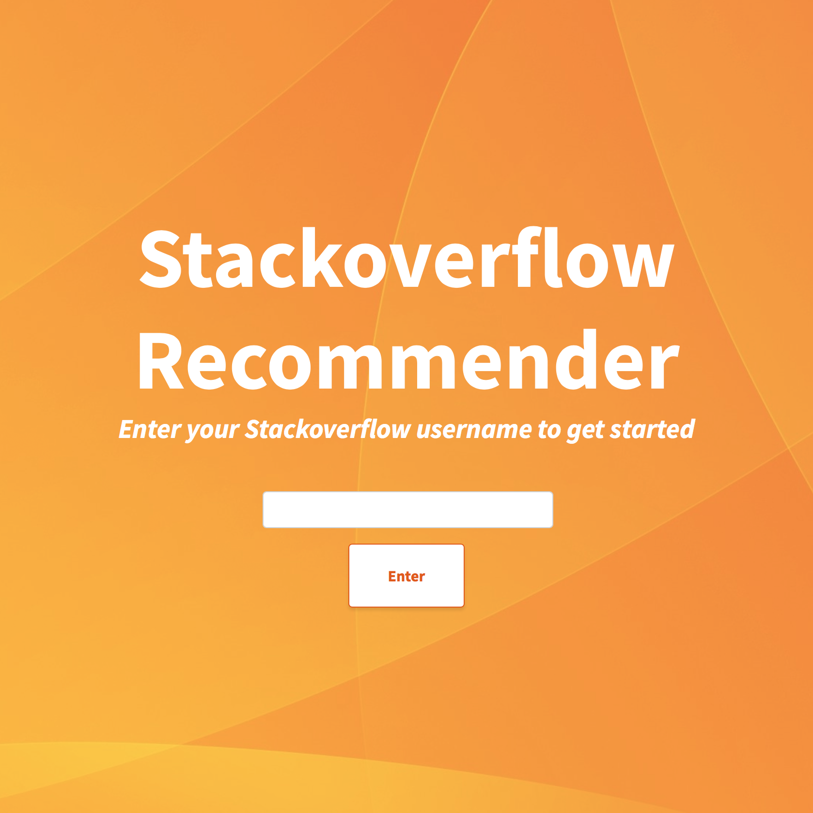

Projects

Explainable defect identification in X‑rays of automotive parts using CNNs
Master's Thesis
- Developed a machine learning pipeline and multiple custom convolutional neural networks for the identification of casting defects in real‑world X‑ray images using tensorflow, WandB and scikit‑learn for a major car manufacturer
- Used explainable AI methods to visually highlight the potential defects in the X‑ray images and achieved a 93% classification accuracy
Soundtrace: audio copyright content management for Twitch streamers
Personal project
- Designed and implemented a web application that enables Twitch streamers to mute or delete videos that contain audio copyrighted material
- Developed using the public Twitch API, Angular, Nest.js and redis jobs for the downloading and fingerprinting of the audio content
Database query optimization by partitioning for aggressive data skipping
Scientific team project
- Developed an API for Apache Spark using Spring Boot and Apache Livy that enables the partitioning of data for faster query times
- Achieved a 40% decrease in rows scanned by clustering the data based on the most used filters and skipping irrelevant partitions

Pill Reminder: medication tracker and reminder iOS app
Internship project
- Developed a native iOS application using Swift that enables the digital tracking and scheduling of medication plans
- User data was persisted both on the device and in the cloud using CoreData and Firebase

Recommendations for relevant Stackoverflow questions
Bachelor's thesis
- Developed a prototype recommendation engine that uses collaborative filtering to predict relevant questions and answers for Stackoverflow users
- Implemented using a Django webserver, a Flask REST server, both deployed on the Google App Engine
Twitch open-source libraries
Personal project
- Implemented a modern Kotlin library that enables an easy interaction with the Twitch public API, using Ktor and Dokka with more than 10 Github stars
- Developed a TypeScript package that provides types support for the embeddable Twitch player with approx. 300 weekly downloads